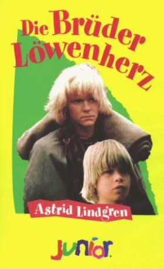

#9598 Die Brüder Löwenherz
Alternativ: The Brothers Lionheart (Englischer Titel)
 
 IMDB-Wertung: 7.2 / 10
IMDB-Wertung: 7.2 / 10  Metascore: 0
Metascore: 0 
Jonathans kleiner Bruder Krümel ist sehr krank und weiß, dass er bald sterben muss. Er hat Angst vor dem Tod. Jonathan tröstet ihn. Er erzählt ihm, dass man nach dem Tod in das Kirschblütental gelangt. Dort soll Krümel auf Jonathan warten. Solange kann er am See in der Sonne sitzen und angeln. Das Kirschblütental gibt es wirklich, doch alles kommt ganz anders als geglaubt. Es ist dort nicht wie im Paradies, und es ist auch nicht die letzte Ruhestätte nach dem Tod. Die Brüder haben dort viele Abenteuer und harte Prüfungen zu bestehen. Aber auch in dieser Welt muss man irgendwann sterben. Krümel fürchtet, dass ihn der Tod erneut von seinem Bruder trennt. Doch Jonathan weiß wie immer eine tröstende Antwort: "Das nächste Mal treffen wir uns dann im Apfelblütental."
Jahr: 1977
Dauer: 106 Minuten
FSK: 6
Land: Schweden Studio: Stamm Film AGTonspuren:
Untertitel:
Auflösung: 720p (1280x718) Größe: 2713 MB
Genre: Drama, Abenteuer, Fantasy, Familie
Regisseur: Olle Hellbom
Drehbuch: Astrid Lindgren, Astrid Lindgren
Soundtrack: Lasse Dahlberg, Björn Isfält
Darsteller:
- Staffan Götestam als Jonatan
- Lars Söderdahl als Skorpan
 Allan Edwall als Mattias
Allan Edwall als Mattias- Gunn Wållgren als Sofia
- Folke Hjort als Jossi
 Per Oscarsson als Orvar
Per Oscarsson als Orvar- Tommy Johnson als Hubert
 Georg Årlin als Tengil
Georg Årlin als Tengil- Bertil Norström als Pjuke
- Bengt Brunskog als Chief Guard
- Göthe Grefbo als Tengil's Guard
- Egil Holmsen als Tengil's Man
- Stephen Garlick als Jonatan
 Eddie Axberg als Screaming man (uncredited)
Eddie Axberg als Screaming man (uncredited)- Bengt Blomgren als (uncredited)
- Jan Nygren als Veder
- Micha Gabay als Kader
- Mats Andersson als Tengil's Soldier
- Aksel Erhardtsen als Tengil's Soldier
- Ulf Håkan Jansson als Tengil's Soldier
- Bodil Lindorff als Mother
- Lone Rode als Antonia
- Erno Müller als Guard
- Per-Axel Arosenius als Tengil's Man
- Björn Strand als Tengil's Man
- Lars Nyberg als Tengil's Man
- Nicholas Barnes als Skorpan
- Rune Andersson als (uncredited)
- Ingrid Jussil-Årlin als (uncredited)
Datei: X:\Kinder Collections\Astrid Lindgren\Brüder Löwenherz, Die (1977, FSK6, 1280x718).mkv seit 18.09.2018
Festplatte: Kinder-Filme+Trick
 Es gibt insgesamt 26 Filme in der Gruppe 'Kinder Collections\Astrid Lindgren'
Es gibt insgesamt 26 Filme in der Gruppe 'Kinder Collections\Astrid Lindgren'